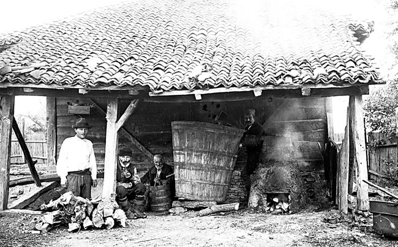

Kako su Srbi nekada pekli rakiju?
U Manakovoj kući otvorena je 6. septembra autorska izložba Josifa Vacića, kustosa u Etnografskom muzeju, „Praviti i piti rakiju”.Uz predmete i fotografije iz fonda Etnografskog muzeja dat je celovit prikaz prakse i običaja u vezi sa pečenjem i ispijanjem rakije u srpskom narodu.
Za proizvodnju rakije koristi se specijalno konstruisani kazan. Kako nam je na ovoj izložbi prikazano, postoje dva različita tipa kazana koji su u upotrebi tokom 20. veka. Prvi je tzv. seljački kazan, koji su pravili sami domaćini ili vešti ljudi iz sela, dok je drugi tip kazana (lampek ili mašinski kazan) proizvod zanatlija.
Ložište za „seljački kazan” se zidalo od blata i zemlje, a svi delovi (osim samog kazana u kome vri kljuk) često su pravljeni od drveta. Na jugu Srbije za izradu kapaka, lula, tabarki, pa čak i samog kazana, koristila se glina. Lampek je takoreći jedini tip kazana koji se danas u domaćinstvima koristi za proizvodnju rakije.Rakija se peče uglavnom u poznu jesen i tokom zime. Pečenje rakije predstavlja svojevrsni događaj u svakom domaćinstvu.
Oko kazana se okupe svi muški članovi domaćinstva, od staraca do odraslih dečaka, uz njih su i susedi, prijatelji i rođaci. Prisustvo mlađih ukućana procesu proizvodnje rakije predstavlja svojevrsnu priliku da zavire u svet odraslih. Ovaj događaj je na izložbi predstavljen modernim kazanom za pečenje rakije pored kojeg se nalaze klupe na kojim posetioci mogu sesti i prelistati sabranu kolekciju srpskih narodnih umotvorina vezanih za rakiju, voće i pijanstvo.
U drugom delu izložbe, pre svega putem fotografija, prikazana je upotreba rakije u životnom ciklusu kod Srba (od rođenja do smrti). Kada se rodi dete, oni koji dolaze „na čestitanje” donose poklone, po pravilu i rakiju. Pri ispijanju prve čašice nazdravlja se novorođenčetu i roditeljima sa željama za dug i srećan život. Rakija igra istaknutu ulogu i u svadbenim običajima. Na svadbu se poziva tako što stari svat ponudi zvanici bukliju s rakijom. Tokom svadbenih rituala, kada se prvi deo obreda odvija u pokretu, rakija se pije iz čokanja, flaša, buklija, pljoski i čutura.
Za stolom se služi uvek u staklenim čašicama.Rakija je nezaobilazna i u običajima posmrtne prakse, kada se pije u pomen pokojnika – „za njegovu dušu”. U ovim prilikama se ne nazdravlja, ne govori se „živeli”, niti se kuca čašicama, već se samo prekrsti, odaspe malo pića na zemlju i spomene pokojnik.Izložbom „Praviti i piti rakiju” Josif Vacić je skrenuo pažnju na značaj pečenja i pijenja rakije kod Srba. Pažljivim izborom predmeta i fotografija dočarana je ne samo atmosfera prošlih vremena, već je ukazano i na neke, već zaboravljene običaje.